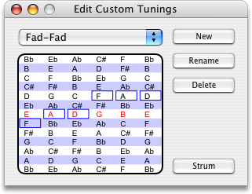

Apparently, lots of guitarists are into tunings besides Standard, Open C, and Open G. For those of you who really need to re-tune, FretPet gives you the ability to add custom tunings to the menu that appears in the menu and the guitar palette's contextual menu.
Custom Tuning Menu
Custom Tunings are added to the bottom of the submenu. (Or ⌃-click the tuning label in the Guitar Palette.) Since this menu starts out empty, you will want to select to open the Customize Tunings dialog.
Dialog Features
- Tuning Popup
- This popup menu mirrors the menu. Use this popup to select the tuning you wish to modify.
- Tone Selectors
- Use the six selectors to choose the tones for the open strings. The low strings are on the left. You will hear the tones played as you select them, in case you want to compare them to your guitar.
- New
- Click this button to add a new tuning.
- Rename
- Click to rename the selected custom tuning.
- Delete
- Click to delete the selected tuning.
- Strum
- Click to hear the tuning strummed.
Custom Tunings In FretPet Files
When you save a composition from FretPet its tuning is saved with the file. That way if another person opens up your composition they can hear it just the way you intended.